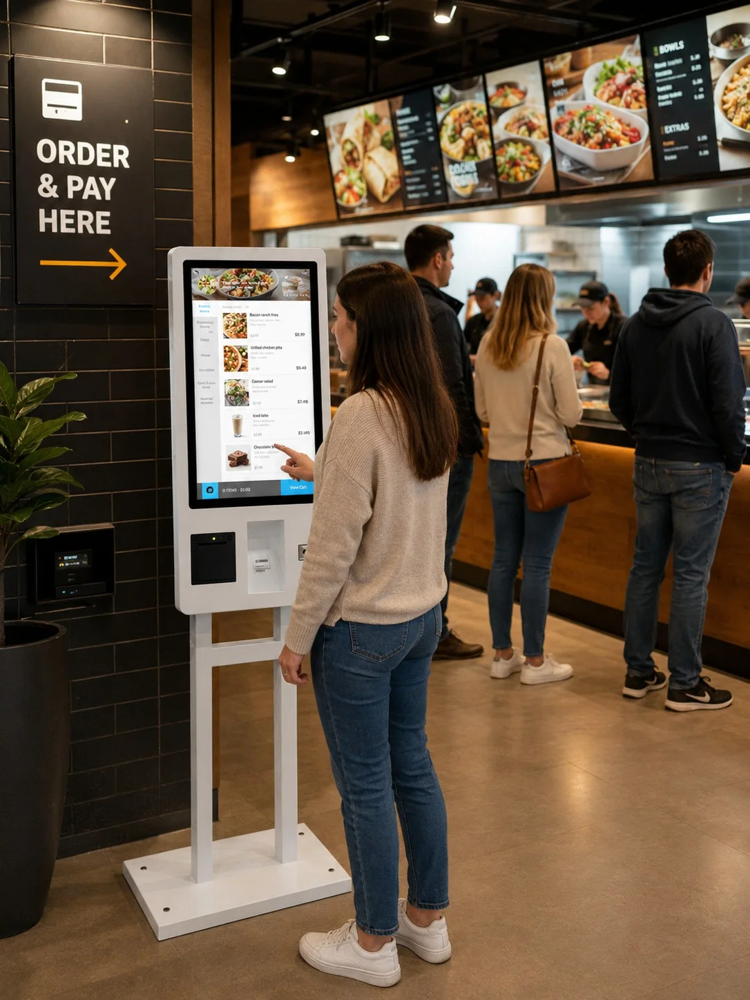

Negocios
Comercio electrónico
Las tiendas en línea permiten a una empresa vender sus productos o servicios en Internet, sin depender de un local físico. Se organizan en torno a un catálogo, un carrito de compras y un medio de pago.
- La tienda está abierta 24/7.
- Se puede llegar a clientes de otras ciudades y países.
- Los costos de operación suelen ser menores que los de un local físico.
Servicios de autoservicio

En los sitios de autoservicio el usuario realiza de manera personal sus consultas o trámites: revisa el saldo de una cuenta, consulta una factura o actualiza sus datos, a cualquier hora y sin intermediarios.